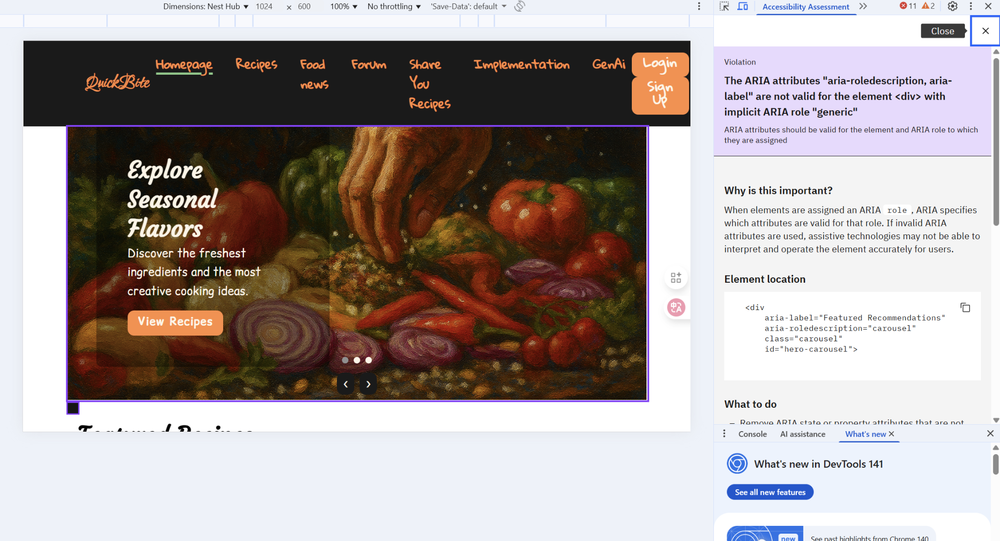
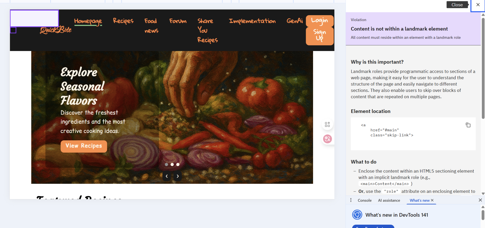
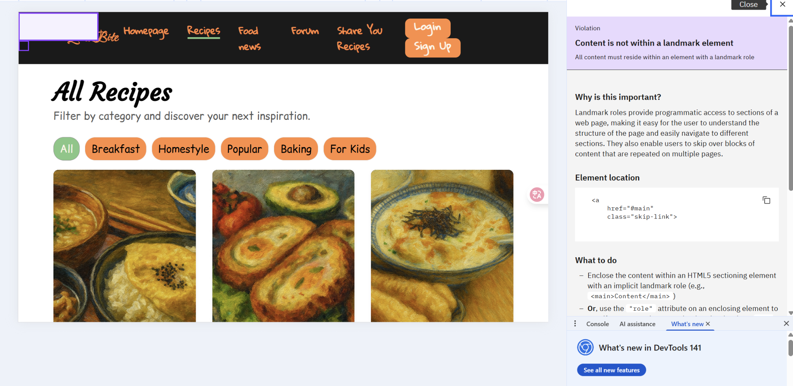
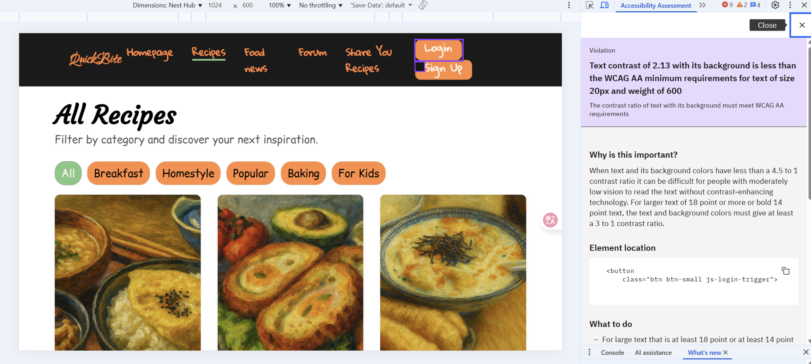
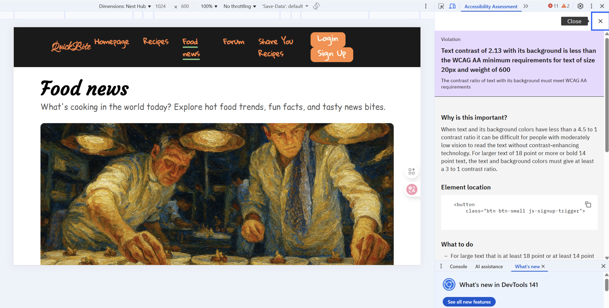
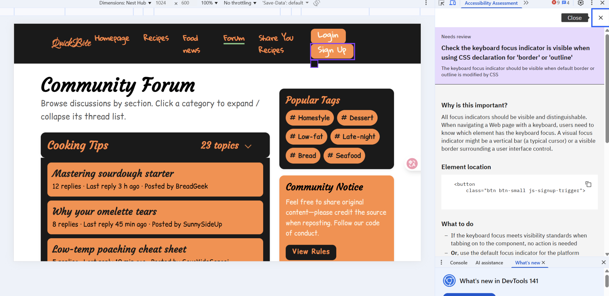

Implementation Rationale
Alignment with Client and User Needs
This community-based recipe and food-sharing platform was developed under the framework set in the A3 Design Proposal and was informed by user insights gathered during the A2 research phase. The overall design follows a value-need-feature alignment approach: maintaining visual consistency and multi-device responsiveness on the one hand, and delivering an inclusive digital experience for real community scenarios on the other.
The project primarily targets three user groups:
- time-constrained office workers;
- users with visual impairments or who rely on assistive technologies;
- busy parents.
A2 findings showed that these users commonly prioritise: clear and predictable navigation, mobile-friendly layouts, fast access to core content, and community features that support interaction and sharing.
The final implementation also aligns with the three key priorities of the Connect Communities Initiative (CCI):
- Social Cohesion: public forums and discussion areas allow users to ask questions, share cooking tips, and post local events, extending online interaction into offline community participation.
- Cultural Inclusivity: food ingredients, imagery, and copy include multicultural elements, encouraging users to upload personal or family recipes and to build a shared space that respects diversity.
- Digital Inclusion: the site follows WCAG 2.2 AA, using semantic HTML, keyboard-accessible layouts, descriptive alt text, and reserving the ability to add multilingual support in the future.
To operationalise these goals, the final interface includes:
- shortcut entries in the homepage carousel (e.g. “View Recipes”, “Start Learning”, “Visit Forum”) to lower the entry barrier for first-time visitors;
- open access to browsing and reading tasks without forcing login; login is only required when users create content (comment, submit recipe), balancing accessibility with security/identity;
- comment and recipe-submission components to support user-generated content;
- full mobile-responsive optimisation so navigation, cards, and modals remain usable on small screens.
Overall, the platform's functionality, information architecture, and visual tone are consistent with CCI's social mission: by combining inclusive technology with culturally sensitive UI, it promotes connection, increases participation, and creates a sustained sense of belonging.
Accessibility and Ethical Considerations
Accessibility and ethics were positioned as front-loaded principles from the A2 stage and were further refined in A3, reflecting an emphasis on fairness, inclusion, and transparency.
Accessibility Strategies
- WCAG 2.2 AA compliance: structured heading levels, clear form labels, and colour contrast meeting 4.5:1;
- Alt text completion: meaningful alternative descriptions for icons, food photos, and other visual elements, to avoid “visible but semantically missing” content;
- Colour contrast testing: verified with IBM's accessibility checker for key foreground/background pairs;
- Semantic HTML and ARIA roles: semantic tags and appropriate ARIA attributes help assistive technologies recognise page hierarchy and regions;
- Keyboard accessibility: all major interactive areas can be accessed without a mouse.
Ethical Design Practices
- Open access policy: reading content (recipes, stories, forum posts) is available by default without login;
- Minimal data collection: only basic data (email, nickname) is collected when users actively contribute, avoiding excessive data gathering;
- Clear notice and consent: users are shown explicit privacy/usage information before registration or submission;
- No dark patterns: no forced pop-ups, misleading buttons, or auto-subscriptions, so user decisions remain voluntary.
These measures ensure coherence between UX and ethics: the platform satisfies course-level accessibility requirements while also respecting real users' autonomy and privacy.
Variations from the A3 Design Proposal and Justifications
The A3 proposal was more demonstrative and conceptual, whereas the final build had to respond to real constraints such as multiple pages, maintainability, actual code structure, and automated accessibility audits. For that reason, the design was intentionally narrowed in iconography, colour scheme, feature scope, and navigation.
Icon and Colour Strategy Adjustments
The final visual style shifted from the initial "high-saturation colours + simple icons" to a "unified palette + expressive but reusable graphic language". Early versions used highly saturated icons (e.g. red heart), which drew attention but clashed with large text sections, dark navigation, or light beige backgrounds. In the final implementation:
- social/operational icons use an orange tone consistent with the overall site;
- category information is presented mainly as text inside pill-shaped containers, to stay readable on mobile;
- labels are unified in English to align with the current HTML and possible future multilingual switching.
Because the current primary tone is dark, the overall palette was also slightly darkened to reduce visual fatigue and to match a content-heavy layout. All icons were given text alternatives so they can be read by screen readers.
Colour Strategy Evolution
Early scheme (high-saturation, attention-first): the earliest mockups used a palette
common in food/event landing pages: primary red #f44336, secondary orange
#ff9800, text black #000000, and beige background #f5f5dc.
This made demoing easy and clearly signalled “food / heat / sharing”. However, once more pages
(recipes, forum, implementation rationale, login modal) appeared, repeating red/orange highlights
across sections caused unstable hierarchy and made all parts look equally important; the high
saturation was also less suitable for long scrolling.
Current scheme (dark-first, orange-accent, content-oriented): in the implementation
phase, the palette was converged to one suitable for a multi-page content site: deep charcoal
#1a1a1a as the main/title colour, warm orange #ff8c42 as the single
high-saturation accent, light beige #fdf5e6 as the background, and #1a1a1a
as the primary text. The aim is to stabilise structure, improve readability, and limit the number of
emphasis points. Dark tones can be reused for navigation, forum lists, and explanatory pages; orange
appears only on actionable elements (buttons, tags, prompts), avoiding the “everything is
highlighted” issue from the early scheme; light beige softens the contrast, supports a
lifestyle/community mood, and works well with warm-toned food images. This shift from a
display-oriented palette to a structure-oriented one is a necessary convergence as the information
architecture matured, and it explains the small but deliberate deviation from the A3 proposal.
Feature Scope Refinements
- private chat was removed and replaced with public forum interaction to simplify moderation and improve safety;
- the gallery dropped complex interactive filters and was changed to a lighter, grid-based layout that works better with screen readers;
- multilingual support was deferred, but the current flat text-image composition and clear English labels still provide basic comprehensibility for users from different cultural backgrounds.
These choices reduced development complexity without sacrificing the main use cases and left room for future extensions.
Navigation and Structural Optimisation
The A3 version emphasised a large top navigation and hero banner, which works on desktop but takes too much space on mobile. In the final build:
- the above-the-fold section on the homepage was enriched so that users can immediately recognise the platform type and main entry points;
- search and filtering on the recipes page were integrated into a single view, allowing in-place category filtering;
- below 767px, a collapsed/folded navigation pattern is used, hiding non-essential elements to keep the small-screen layout clean.
Link Styling and Interactive Feedback
In A3, link styling was mostly single-state hover. In the final version, link types were separated into body links, navigation links, button-like links, and footer links:
- top navigation shows an underline on hover and keeps the active state on the current page;
- recipe cards slightly lift and the title colour changes on hover, signalling “the whole card is clickable”;
- the footer reserves positions for social media icons for future sharing integration.
Challenges and Strategies
Problem: at different viewport widths, some sections suffered from layout breaks, text being covered, or images overflowing, especially in mixed text-image pages and multi-card grids.
Strategy:
- define key breakpoints at 768px and 1024px to control column count, card width, and text wrapping;
- apply
max-widthand proportional scaling to images to keep visual consistency in different containers.
Outcome: layouts remain stable and readable on mobile, tablet, and desktop, meeting the course requirements for responsiveness and accessibility.
4. Accessibility Findings
This section reports the accessibility issues identified on three pages of the QuickBite website: Recipes, Forum, and Implementation Rationale. The issues are grouped by WCAG-related concern and include cause and remediation.






Insufficient colour contrast in primary action buttons
- Location: Global header (e.g.
Login,Sign Up) as rendered on Recipes and Forum pages. - Issue: The orange background and white text produce a contrast ratio of 2.13:1, which does not meet WCAG 2.1 AA requirements for normal text (min. 4.5:1) or for large/bold text (min. 3:1).
- Cause: A light accent colour was applied to a high-priority control without recalculating text–background contrast.
- Risk/Impact: Users with low vision, colour-vision deficiencies or those viewing on low-contrast displays may not perceive the control as actionable, which directly affects access to authentication.
-
Remediation:
- Darken the button background (e.g. a darker shade of the brand orange), or
- Change button text to a dark colour (
#000/#1A1A1A), then - Revalidate the final colour pair against WCAG AA.
Incorrect use of ARIA attributes on carousel container
- Location: Homepage hero carousel
(
<div id="hero-carousel" class="carousel">). - Issue: ARIA attributes such as
aria-label="Featured Recommendations"andaria-roledescription="carousel"were applied to a generic<div>that does not declare a suitable landmark or widget role. - Cause: ARIA was added to describe intent (“this is a carousel”) but the element still exposes the implicit generic role, so the attribute set is not valid for this element.
- Risk/Impact: Assistive technologies may announce inconsistent information or fail to identify the region as an interactive carousel.
-
Remediation (one of):
- Declare an appropriate role (e.g.
role="region"or a complete carousel pattern) and keep the ARIA, or - Remove the non-essential ARIA attributes if the section is primarily visual and already introduced in surrounding content.
- Declare an appropriate role (e.g.
4.3 Main content not exposed through a landmark
- Location: Homepage, Recipes, and other content pages that use a skip link
(
<a href="#main" class="skip-link">). - Issue: A skip link points to
#main, but the page does not include a corresponding<main id="main">(orrole="main") wrapper. - Cause: The page template defines navigation and skip link, but the main
content area was left as unsectioned
<div>s. - Risk/Impact: Keyboard and screen-reader users cannot reliably bypass repeated navigation; page structure is harder to understand.
-
Remediation:
Wrap each page’s primary content in:
<main id="main"> <!-- page-specific content --> </main>and apply this change to all pages that expose the skip link.
4.4 Keyboard focus indicator not visible on custom buttons
- Location: Header actions (
.btn.btn-small), Forum interactive elements. - Issue: Custom button styling suppresses or visually hides the default focus outline.
- Cause: Button styles likely reset
outlineor set borders that blend with the background without adding an alternative focus style. - Risk/Impact: Keyboard-only users cannot see which element currently has focus, making navigation unreliable.
-
Remediation:
Add a visible focus style, for example:
<style> .btn:focus-visible { outline: 3px solid #fff; outline-offset: 3px; } </style>(colour to be adjusted to maintain contrast against the header background).
4.5 Repeated contrast issue across pages
- Location: Recipes page header actions (same components as in §4.1).
- Issue: The contrast failure recurs because the same button component is reused.
- Observation: This indicates a component-level rather than page-level defect.
- Remediation: Fix the colour/focus in the shared button class so that all pages inherit the compliant style.
4.6 Structural consistency
- Observation: The “content not within a landmark element” warning appears on multiple pages. This confirms the issue is in the shared layout, not in individual page content.
- Remediation: Update the base layout (
<header>→<main>→<footer>) once; re-run the audit to verify that Recipes, Forum and Implementation Rationale all expose a single main landmark.